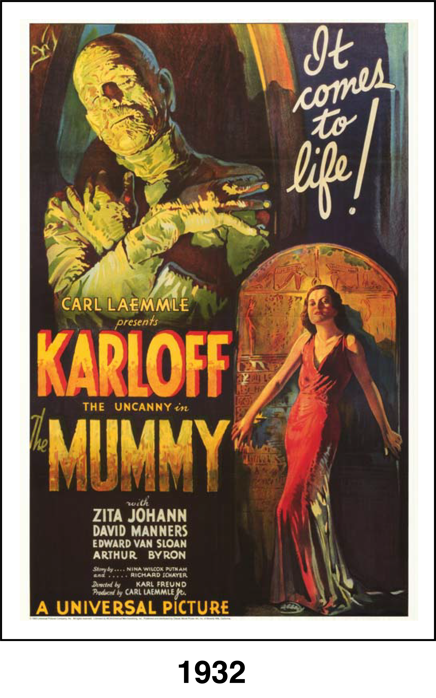
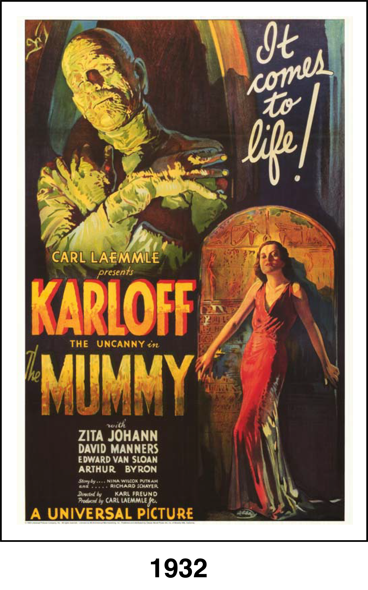

A team of British archaeologists led by Sir Joseph Whemple (Arthur Byron) discover the mummified remains of the ancient Egyptian prince Imhotep (Boris Karloff), along with the legendary scroll of Thoth. When one of the archaeologists recites the scroll aloud, Imhotep returns to life, but escapes. Several years later, Imhotep has taken on the guise of a wealthy man, as he searches Egypt for his lost love, who he believes has been reincarnated as the lovely Helen Grosvenor (Zita Johann).